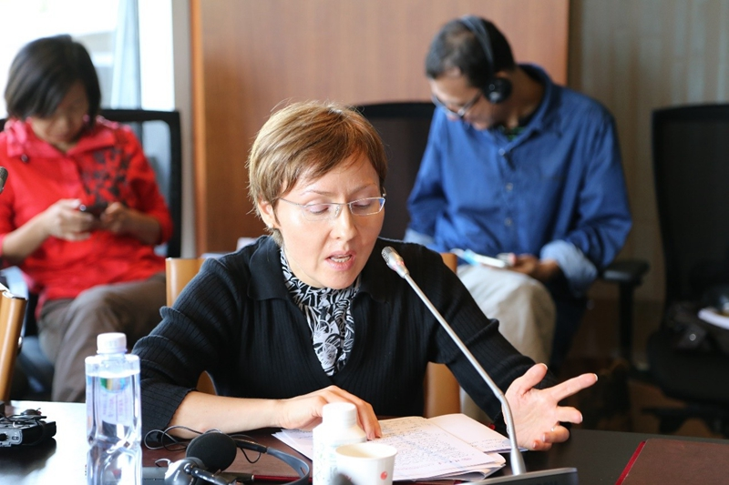

学术活动

主讲人：
主持人：
嘉宾：Tani BARLOW
Jeremy FRIEDMAN
Aaron T. HALE-DORRELL
Fabio LANZA
Andrew SLOIN
曹天予
林春
赵月枝
吕新雨
董志凯
王绍光
王洪喆
温铁军
高梁
严海蓉
Anna KRYLOVA
汪晖
崔之元
周展安
阳和平
老田
李玲
Oscar SANCHEZ
潘毅
2015年9月4-6日
清华大学人文图书馆凯风研究院
主办单位：清华大学人文与社会科学高等研究所主办，杜克大学历史系、莱斯大学历史系，香港理工大学应用社会科学系协办
阅读全文
会议现场
汪晖教授发言

杜克大学Anna Krylova教授发言
莱斯大学Tani Barlow教授发言